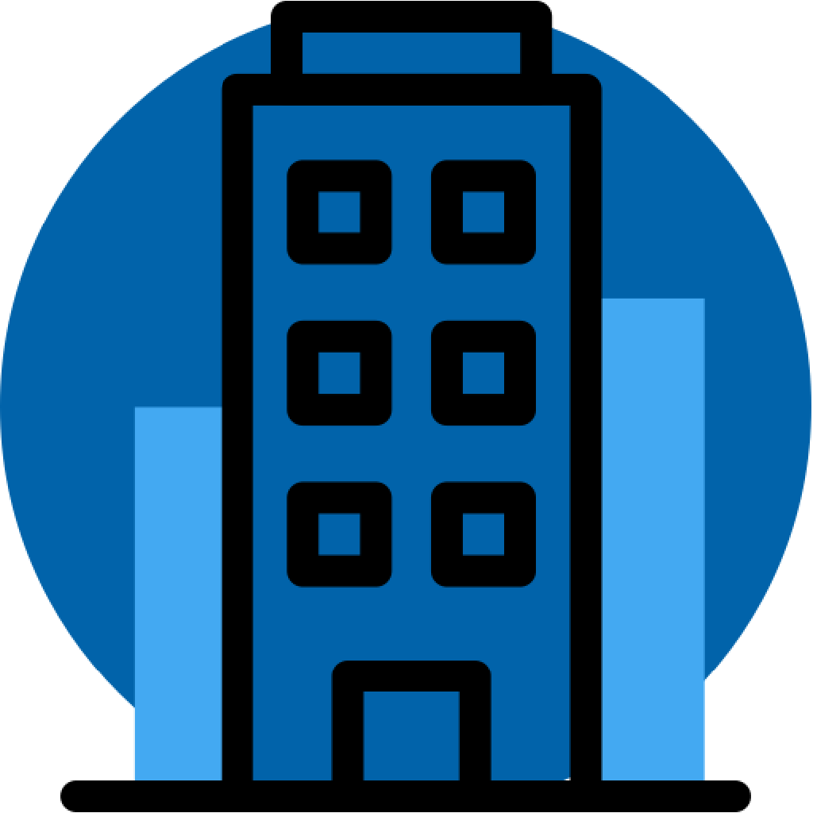

<ion-content  >
 <div class="container">
    <h1 class="ion-text-center title">Relevamiento Visual</h1>
    <br>
    
  </div>

  <ion-card id="NongModel" class="ion-text-center card" >
      <ion-card-header>
        <ion-card-title class="title">Iniciar sesión</ion-card-title>      
      </ion-card-header>
 <form [formGroup]="loginForm"  class="form" >
       

        <ion-input class="input" label-placement="floating" mode="md" fill="outline" label="Correo" type="email" placeholder="Ingrese su correo electrónico" formControlName="mail" ></ion-input>
        <ion-text *ngIf="loginForm.controls['mail'].errors?.['required'] && loginForm.controls['mail'].touched" color="danger">Debe ingresar un correo</ion-text>
    
        <hr>
  
        <ion-input class="input" label-placement="floating" mode="md" fill="outline" label="Contraseña" type="password" placeholder="Ingrese la contraseña" formControlName="pass"></ion-input>
  
        <ion-text *ngIf="loginForm.controls['pass'].errors?.['required'] && loginForm.controls['pass'].touched" color="danger">Debe ingresar una contraseña</ion-text>
        <ion-text *ngIf="loginForm.controls['pass'].errors?.['minlength']" color="danger">Debe tener 6 caracteres mínimo</ion-text>
        
        <hr>
        
        <ion-button shape="round" [disabled]="loginForm.invalid" class="ion-text-center login-button" (click)="login()">Ingresar</ion-button>

<hr>
        
        <!-- <h3>Acceso rápido</h3> -->
        <div class="ingreso-rapido">
            <hr>
            <ion-fab slot="fixed" color="tertiary" vertical="top" horizontal="start">
              <ion-fab-button>
                <ion-icon name="chevron-forward-circle"></ion-icon>
              </ion-fab-button>
              <ion-fab-list side="end">
                <ion-fab-button>
                  <ion-icon name="accessibility-outline" color="secondary" (click)="buttonDemoUno()"></ion-icon>
                </ion-fab-button>
                <ion-fab-button>
                  <ion-icon name="body-outline" color="secondary" (click)="buttonDemoDos()"></ion-icon>
                </ion-fab-button>
                <ion-fab-button>
                  <ion-icon  name="man-outline" color="secondary" (click)="buttonDemoTres()"></ion-icon>
                </ion-fab-button>
              </ion-fab-list>
            </ion-fab>

        </div>

      </form>
      
    </ion-card>

  
  
</ion-content>


